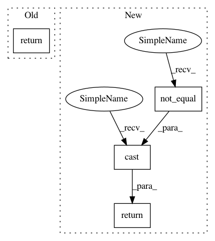

dad75ba3efc4fb3e244288f99ed09d1d125c49cf,baseline/tf/embeddings.py,,_mean_pool,#Any#Any#,317
Before Change
def _mean_pool(_, embeddings):
return tf.reduce_mean(embeddings, 1, False)
def _max_pool(_, embeddings):
return tf.reduce_max(embeddings, 1, False)
After Change
def _mean_pool(inputs, embeddings):
mask = tf.not_equal(inputs, 0)
seq_lengths = tf.reduce_sum(tf.cast(mask, tf.int8), axis=1, keepdims=True)
embeddings = tf.where(tf.expand_dims(mask, -1), embeddings, 0.)
return tf.reduce_sum(embeddings, 1, False) / tf.cast(seq_lengths, embeddings.dtype)
def _max_pool(inputs, embeddings):
mask = tf.not_equal(inputs, 0)
In pattern: SUPERPATTERN
Frequency: 3
Non-data size: 4
Instances
Project Name: dpressel/mead-baseline
Commit Name: dad75ba3efc4fb3e244288f99ed09d1d125c49cf
Time: 2020-05-01
Author: wliu@interactions.com
File Name: baseline/tf/embeddings.py
Class Name:
Method Name: _mean_pool
Project Name: tensorflow/benchmarks
Commit Name: 237d138e6af68e7aed794c4797f07eab2fad4261
Time: 2018-10-01
Author: haoyuzhang@google.com
File Name: scripts/tf_cnn_benchmarks/ssd_dataloader.py
Class Name:
Method Name: encode_labels
Project Name: tensorflow/mesh
Commit Name: a8df7240f9174e03651e7fbd1ea52006f07a46a1
Time: 2020-04-21
Author: noam@google.com
File Name: mesh_tensorflow/transformer/transformer.py
Class Name:
Method Name: sublayer_mask_padding
Project Name: dpressel/mead-baseline
Commit Name: dad75ba3efc4fb3e244288f99ed09d1d125c49cf
Time: 2020-05-01
Author: wliu@interactions.com
File Name: baseline/tf/embeddings.py
Class Name:
Method Name: _mean_pool